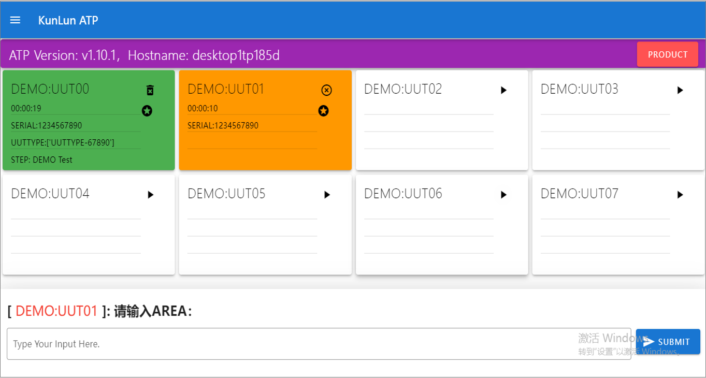

介绍¶
KLAT是KunLun Auto Test Platform的缩写，是命令行测试自动化平台。
平台的本质功能是：通过协议(SSH/TELNET/SERIAL等)连接待测产品(UUT)，发送命令行指令对产品进行激励， 并自动采集产品的反馈日志，用户根据测试业务需要对反馈的日志进行分析、判断，并决策下一个动作(继续发送或是停止测试)， 如此反复，直到所有的命令行指令发送完毕。
平台采用WEB形式的操作界面，自动保存测试全流程日志，同时提供丰富的接口函数，支撑用户快速二次开发。
测试主界面¶
上图展示的是 Container 工位界面。
平台采用三层结构表述测试环境架构，分别是：Station(工站)->Container(工位)->Connection(连接) ，
一个工站可以包含多个工位，一个工位可以包含多个连接。
Station工站 是指一个测试工序，一台物理测试主机可以配置若干个相同的或是不相同的测试工序，不同的测试工序完成不同的测试业务。
Container工位 是指完成测试业务的具体执行单元(任务)，一个测试工序包含若干个测试工位，
多个测试工位可以并行执行多个测试任务，即同时测试多个产品。
Connection(连接) 是指一个连接值待测产品(UUT)的 物理连接 , 一个测试工位可以包含多个连接，以满足产品多元化测试的需求。
例如：手机测试中需要使用程控电源，综测仪，蓝牙连接模组，声音测试模组等，可以建立多个连接，连接之间相互配合、协同完成整个测试流程。
测试用例示例¶
通常一个测试用例包含：
配置测试环境，连接产品
发送一系列测试命令行
对产品反馈的日志进行解析，判断测试结果是通过或是失败
重复第2步与第3步
关闭连接，清理测试环境
假设有如下测试用例：进入Python交互界面，通过 sys.platform 查询当前主机的操作系统类型，并打印结果，
若结果不为 win32，测试失败。反之，测试通过:
from libs import lib
log = lib.get_event_logger()
def main_sequencer():
uut = lib.conn.UUT
uut.open()
uut.send("python\r", expect=">>>", timeout=10)
uut.send("import sys\r", expect=">>>", timeout=10)
uut.send("sys.platform\r", expect=">>>", timeout=10)
log.debug(uut.buf)
if "win32" not in uut.buf:
raise Exception("platform should be [win32], go to fail")
uut.send("exit()\r", expect=">", timeout=10)
uut.close()
return
以上为测试用例的代码实现，接下来先对代码进行分段解释。
从平台导入接口函数库:
from libs import lib
实例化
事件日志，获得实例log，后续可用log.debug(),log.error()等记录事件日志:log = lib.get_event_logger()
定义入口函数，入口函数名必须是
main_sequencer, 平台将从接口函数开始调用用户的程序:def main_sequencer():
获取预定义连接(如何预定义，参考
测试开发章节)，协议为DUMMY, 并打开此连接:uut = lib.conn.UUT uut.open()
平台支持多种连接协议，详情可以参考 接口函数 章节。
DUMMY：调用cmd.exe，获取windows的命令行界面。
SSH：根据提供的ip地址，用户名，密码，连接到产品。
TELNET：根据提供的ip地址，端口号，连接到产品。
SERIAL：根据提供的串口地址，波特率，连接到产品。
发送命令行至连接，配置测试环境:
uut.send("python\r", expect=">>>", timeout=10) uut.send("import sys\r", expect=">>>", timeout=10)
6. 发送测试命令行至连接，并采集产品反馈的日志，日志保存在 uut.buf 中，
log.debug() 将日志打印至 事件日志 界面:
uut.send("sys.platform\r", expect=">>>", timeout=10)
log.debug(uut.buf)
对产品反馈的日志进行分析，判断测试是否通过，若失败，触发异常，测试将停止:
if "win32" not in uut.buf: raise Exception("platform should be [win32], go to fail")
清理测试环境，并关闭连接:
uut.send("exit()\r", expect=">", timeout=10) uut.close()